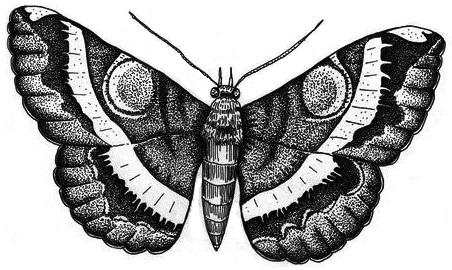

(crise)
TRANSE MUER
"Les hommes n'acceptent le changement que dans la nécessité
et ils ne voient la nécessité que dans la crise." Jean MONNET
et ils ne voient la nécessité que dans la crise." Jean MONNET
Il est donc opportun de saisir ce moment qu'est la crise pour s'interroger profondément sur ce qui est remis en cause en nous, ce qui est dit de nos nouveaux besoins, de nos manques, quitte à devoir ensuite envisager une plus ou moins grande révolution en soi. Une bonne crise est celle qui est suivie d'un véritable changement, l'histoire de l'humanité n-a t-elle pas montré que derrière chaque grande crise il y a une reconstruction, un nouvel élan, un nouveau regard tourné autour du positivisme ?
Ce que nous nions nous soumet. Ce que nous acceptons nous transforme. L'une des origines de la crise est l'apparition d'une dissonance entre nos pulsions et ce que nous avons construit de raisonnable. La distance est devenue trop grande entre ce qui nous pousse et ce qui nous contient. La tension devient intenable. Cette incohérence qui endort la pulsion, fait émerger la frustration. La crise en créant le désordre dans notre existence, va susciter des espaces vides et des brèches où vont s'engouffrer nos idéaux et nos pulsions jusque là réfrénés, refoulés ou interdits. C’est dans la tension entre les opposés qu’apparait la prise de conscience qui a pour tâche, précisément, de les englober et de les réunir. Entendons la pulsion comme une énergie brute de décoffrage. A l'origine elle est animale, elle peut être inorganisée, puissante. Mais elle est d'abord mouvement, instinct, survie et sur lesquels la crise s'appuie. La pulsion dans sa forme sociale correspond au désir.
Ainsi, tout s'engage avec une crise. C'est un temps de rupture et de suspens. Une sorte de fenêtre qui s'ouvre sur une remise en question autour de nos besoins et nous pousse dans l'inconnu de la nouveauté et du changement. Elle entrave les peurs et ouvre à la sensibilité à ce qui nous touche. Les blessures reviennent à l'avant-plan et ce qui, jusque là, semblait pouvoir être contenu s'impose au présent. Ce qui semblait encore confus, dévoile progressivement la violence de sa vérité. Pourtant, l'impétuosité de certains de nos actes, de nos dires et la créativité prennent racine dans le même creuset. Nous sommes porteurs de pulsions, de désirs, qui peuvent être destructeurs aussi bien que constructeurs. On peut imaginer la source des désirs comme un réservoir, le centre vital de notre existence. La crise favorise la créativité pour concevoir la résolution, la sortie de crise.
La crise crée une dissension qui permet de s'ouvrir à la nouveauté, à de nouvelles réponses. C'est une forme de mise à jour existentielle. C'est donc un bouleversement intérieur et à l'écoute de ce mouvement, on peut comprendre que la crise n'arrive pas à un moment précis pour rien. Au travers d'elle, on découvre une opportunité pour changer de route ou pour avancer mieux, autrement, en impliquant une transmutation et accéder à l'émergence.
Ce que nous nions nous soumet. Ce que nous acceptons nous transforme. L'une des origines de la crise est l'apparition d'une dissonance entre nos pulsions et ce que nous avons construit de raisonnable. La distance est devenue trop grande entre ce qui nous pousse et ce qui nous contient. La tension devient intenable. Cette incohérence qui endort la pulsion, fait émerger la frustration. La crise en créant le désordre dans notre existence, va susciter des espaces vides et des brèches où vont s'engouffrer nos idéaux et nos pulsions jusque là réfrénés, refoulés ou interdits. C’est dans la tension entre les opposés qu’apparait la prise de conscience qui a pour tâche, précisément, de les englober et de les réunir. Entendons la pulsion comme une énergie brute de décoffrage. A l'origine elle est animale, elle peut être inorganisée, puissante. Mais elle est d'abord mouvement, instinct, survie et sur lesquels la crise s'appuie. La pulsion dans sa forme sociale correspond au désir.
Ainsi, tout s'engage avec une crise. C'est un temps de rupture et de suspens. Une sorte de fenêtre qui s'ouvre sur une remise en question autour de nos besoins et nous pousse dans l'inconnu de la nouveauté et du changement. Elle entrave les peurs et ouvre à la sensibilité à ce qui nous touche. Les blessures reviennent à l'avant-plan et ce qui, jusque là, semblait pouvoir être contenu s'impose au présent. Ce qui semblait encore confus, dévoile progressivement la violence de sa vérité. Pourtant, l'impétuosité de certains de nos actes, de nos dires et la créativité prennent racine dans le même creuset. Nous sommes porteurs de pulsions, de désirs, qui peuvent être destructeurs aussi bien que constructeurs. On peut imaginer la source des désirs comme un réservoir, le centre vital de notre existence. La crise favorise la créativité pour concevoir la résolution, la sortie de crise.
La crise crée une dissension qui permet de s'ouvrir à la nouveauté, à de nouvelles réponses. C'est une forme de mise à jour existentielle. C'est donc un bouleversement intérieur et à l'écoute de ce mouvement, on peut comprendre que la crise n'arrive pas à un moment précis pour rien. Au travers d'elle, on découvre une opportunité pour changer de route ou pour avancer mieux, autrement, en impliquant une transmutation et accéder à l'émergence.

Le concept de crise nous a été initialement légué par la Grèce antique qui l’avait reconnu comme principe majeur dans la vie de la cité. Ce mot se construit du latin "crisis" signifiant un assaut et du grec "krisis" au sens de séparer, distinguer. Bien qu'il soit utilisé de nos jours pour désigner une période de difficultés, son sens étymologique signifie faire un choix et décider. La crise est une situation, une période difficile où les principes sur lesquels repose une activité sont remis en cause. L'ictus est un événement qui implique à la fois tout le passé et tout l’avenir de l’action dont il marque le cours. Ce mot couvre globalement les sens des perturbations et par là, angoisse, attaque, voire récession ou cataclysme sans pour autant inclure les choix ou les décisions rattachées qui permettraient d'annihiler les causes de ces perturbations.
Le champ de la psychologie où ce terme de crise est le plus crucial est le développement de l'individu. Là, les crises apparaissent comme des étapes structurantes dans le processus d'évolution. La première d'entre elles, c'est de toute évidence, la naissance : c'est la douloureuse expulsion hors d'un monde de totale sécurité pour arriver dans un monde fait de bruit, de lumière, de froid, et où l'on est plus rattaché à rien. La matérialité de cette crise originelle est le cri de l'enfant. Vient aussi, et entre autre, la crise des 3 ans où l'enfant qui s'oppose en disant tout le temps "non" et qui s'affirme en commençant toutes ses phrases par "moi, je". Plus tard, évidemment, la crise de la puberté, ou crise d'adolescence. Ce qui se joue, là, c'est le passage à l'âge adulte, tant sur le plan hormonal, physiologique que psychique. Et puis, il y aura ces crises de vie, ces crises dites existentielles, dont la plus célèbre est la crise de la quarantaine-cinquantaine, ou la crise de milieu de vie. C'est un changement profond de paradigme qui a lieu : pour paraphraser Jung, on dira que l'on passe d'une "volonté de réalisation de ses désirs à une volonté de réalisation de soi".
Le champ de la psychologie où ce terme de crise est le plus crucial est le développement de l'individu. Là, les crises apparaissent comme des étapes structurantes dans le processus d'évolution. La première d'entre elles, c'est de toute évidence, la naissance : c'est la douloureuse expulsion hors d'un monde de totale sécurité pour arriver dans un monde fait de bruit, de lumière, de froid, et où l'on est plus rattaché à rien. La matérialité de cette crise originelle est le cri de l'enfant. Vient aussi, et entre autre, la crise des 3 ans où l'enfant qui s'oppose en disant tout le temps "non" et qui s'affirme en commençant toutes ses phrases par "moi, je". Plus tard, évidemment, la crise de la puberté, ou crise d'adolescence. Ce qui se joue, là, c'est le passage à l'âge adulte, tant sur le plan hormonal, physiologique que psychique. Et puis, il y aura ces crises de vie, ces crises dites existentielles, dont la plus célèbre est la crise de la quarantaine-cinquantaine, ou la crise de milieu de vie. C'est un changement profond de paradigme qui a lieu : pour paraphraser Jung, on dira que l'on passe d'une "volonté de réalisation de ses désirs à une volonté de réalisation de soi".
EN RELATION

AUTHENTICITE

COUPLE
BESOINS
VISION
SYMPTOME
AFFIRMATION
CUPIDE-ON